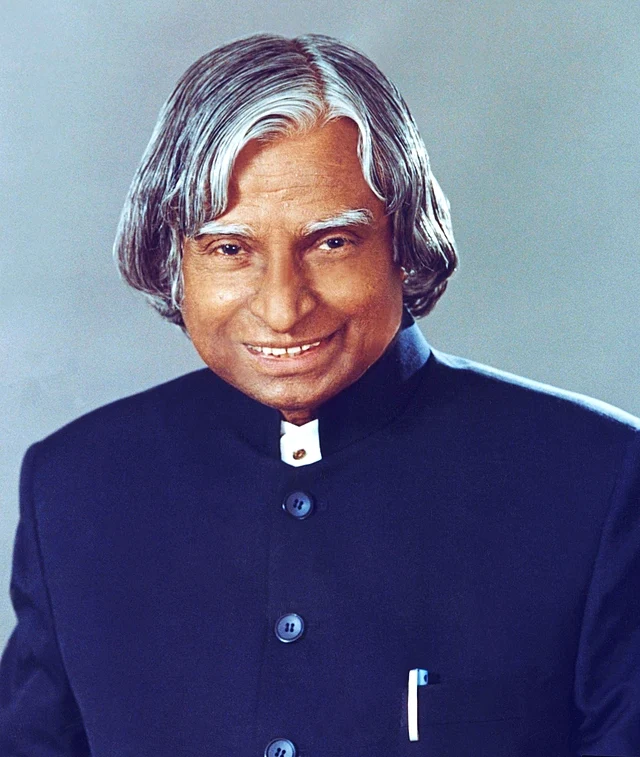

A.P.J Abual Kalam
1931-2015
Missile Man of India
A.P.J. Abdul Kalam (born October 15, 1931, Rameswaram, India—died July 27, 2015, Shillong) was an Indian scientist and politician who played a leading role in the development of India’s missile and nuclear weapons programs. He was president of India from 2002 to 2007. His scientific achievements and popularity gained him the epithets “Missile Man” and “People’s President.”.
Biography
- once wealthy family. The youngest of five siblings, Kalam persevered with his
- joined the Defence Research and Development Organisation (DRDO). In 1969
- joined the Defence Research and Development Organisation (DRDO). In 1969
- joined the Defence Research and Development Organisation (DRDO). In 1969
Read more about of APJ abul kalam wickipedia